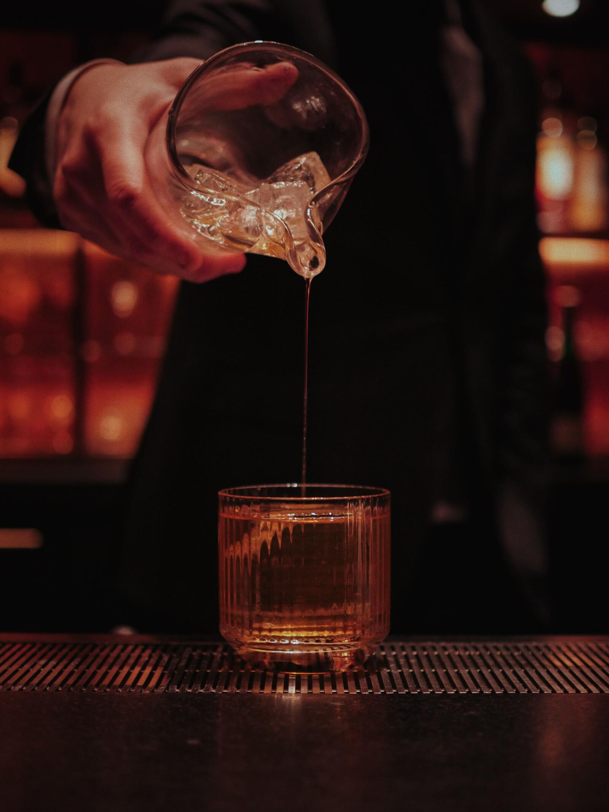
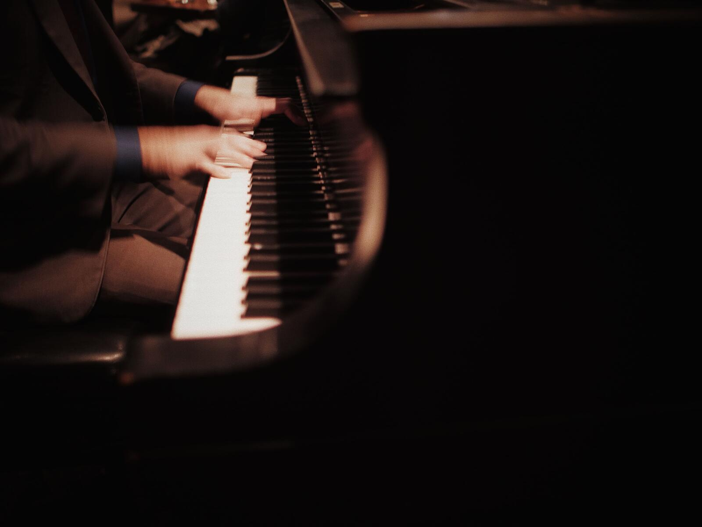
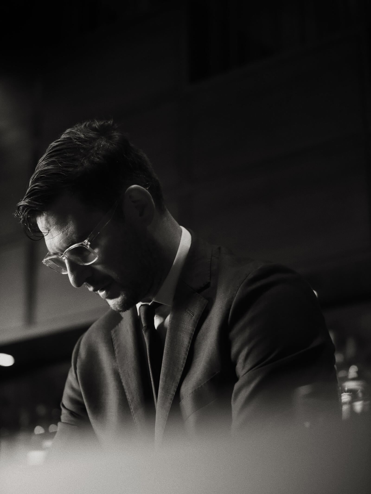
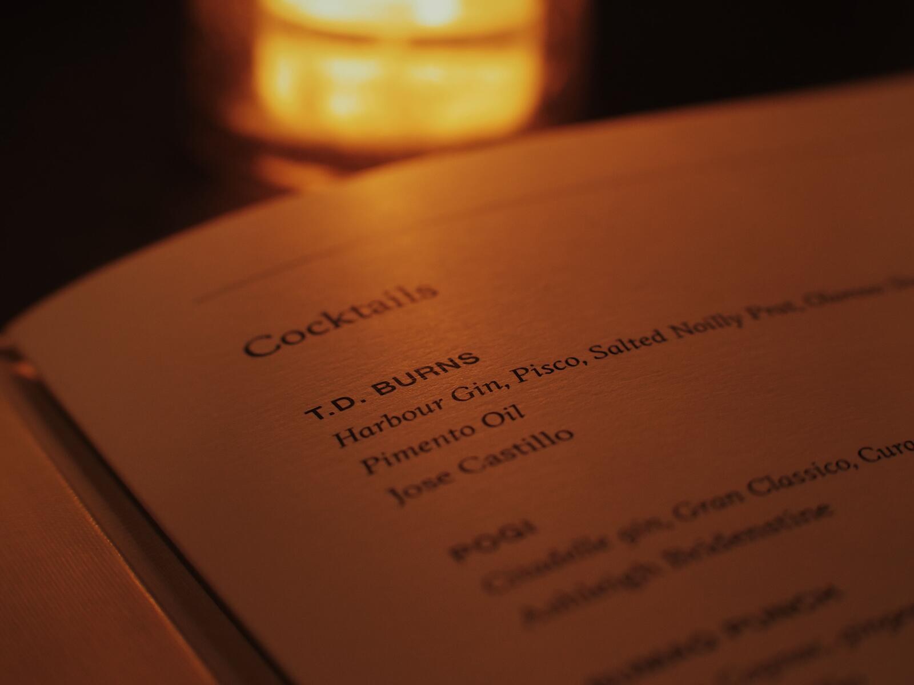
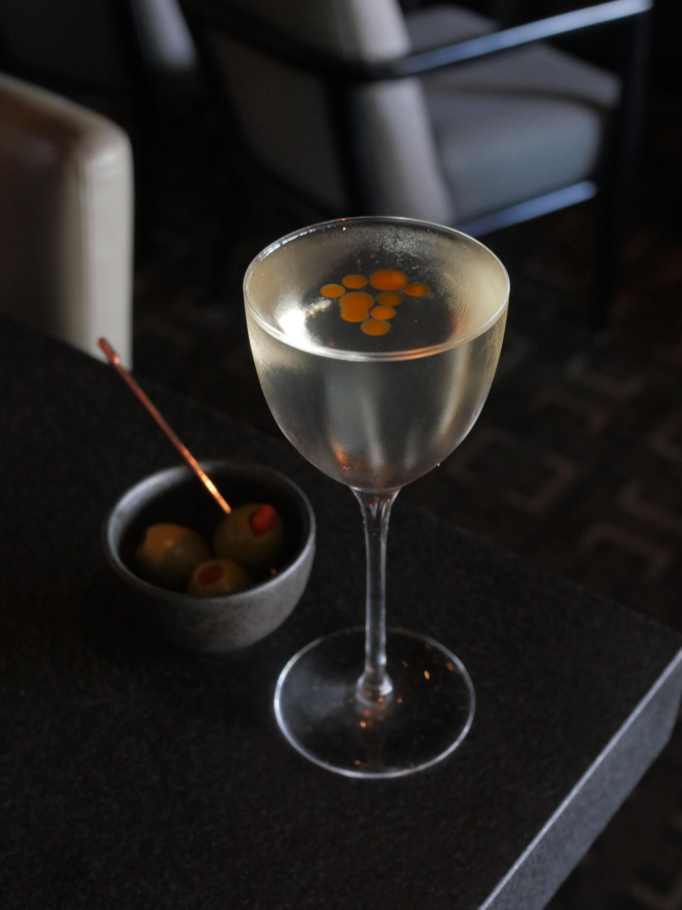
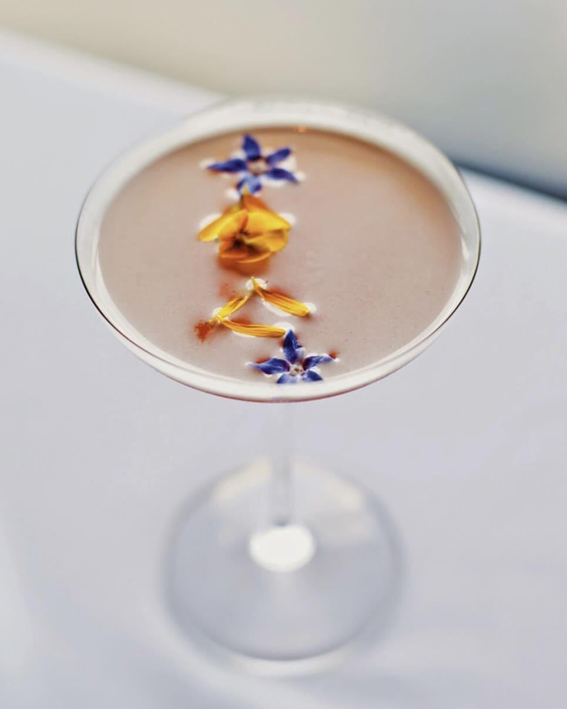
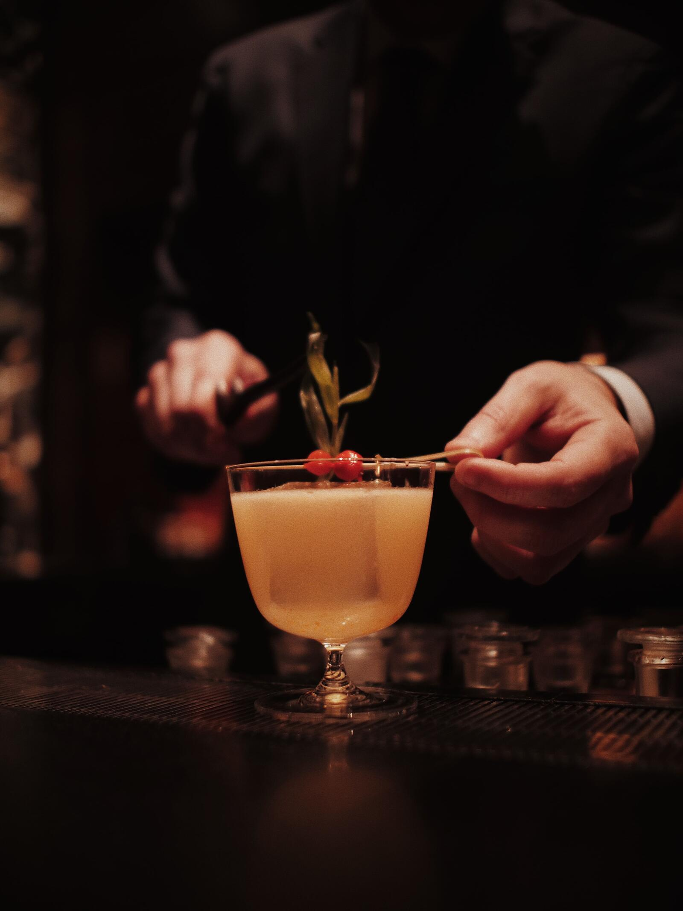

How NA Cocktails Went from Afterthought to Main Event
A conversation with Head Barman, José Castillo.
Read More on Seattle Met →The lounge
Seattle's original cocktail lounge, with a piano, a view, and plenty of room to linger.
In 1949, Seattle lifted the ban on restaurants serving liquor.
Canlis was issued the first license after prohibition. With a live piano nightly and the best barman in town, a new era of the cocktail was born. Since then, as far as we’re concerned, it’s only gotten better.
Walk-ins welcome.







A conversation with Head Barman, José Castillo.
Read More on Seattle Met →